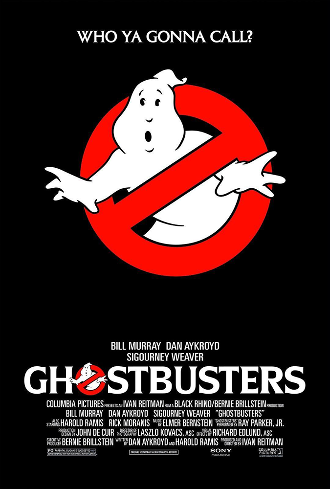
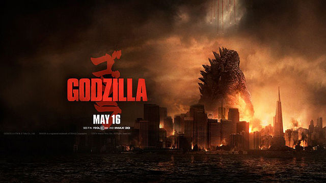

(Numbers for each section ties into the numbered list on the other page (i.e. 1 = 1, 2 =2, etc.). On this page, #1 is the oldest thing I've seen, with #4 being the most recent)
1. How To Train Your Dragon
The first film I remember watching
I really liked and was inspired by the art style and the narrative
The first movie in this 3-part series is what really got me into dragons and the fantastical world
2. Ghostbusters

The second film I can recall watching
It's an interesting concept to me: what comes after death, different kinds of ghosts, etc.
3. Godzilla

My first Godzilla film was the one from 2014
I liked the design, portrayal of scale, the morals, and more
The different eras of Godzilla, and how's he's devveloped as a character over time, is very interesting to witness
4. Dragon Ball
I started watching Dragon Ball Z during quarantine
My friends were really into it, so I gave it a try and liked the story and animation, especially as it went on
The powers and abilites of the main cast intrigued me greatly, especially flight (a power I really liked ever since I was a kid)